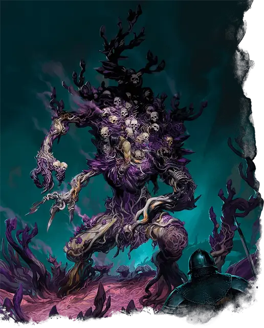

Некроколония фиолетовых сморчков
Violet Fungus Necrohulk
Большое Растение, Нейтральное Злое

Класс Защиты 17 Инициатива +4 (14)
Хиты 123 (13к10 + 52)
Скорость 40 футов
| мод | спас | ||
|---|---|---|---|
| СИЛ | 19 | +4 | +4 |
| ЛОВ | 12 | +1 | +1 |
| ТЕЛ | 18 | +4 | +4 |
| мод | спас | ||
|---|---|---|---|
| ИНТ | 7 | −2 | −2 |
| МДР | 14 | +2 | +2 |
| ХАР | 10 | +0 | +0 |
Иммунитеты Некротический, Яд; Испуганный, Оглохший, Ослеплённый, Отравленный, Очарованный
Чувства пассивное Восприятие 12, Слепое зрение 60 футов
Языки нет
Опасность 7 (2 900 опыта; БВ +3)
Действия
Мультиатака. Некроколония совершает две атаки Разлагающим ударом.
Разлагающий удар. Бросок рукопашной атаки: +7, досягаемость 10 фт. Попадание: 9 (1к10 + 4) Дробящего урона плюс 7 (2к6) Некротического урона.
Споровая бомба (Перезарядка 5–6). Спасбросок Телосложения: Сл 15, каждое существо в 20-футовой Сфере с центром в видимой некроколонией точке в 60 футах. Провал: 28 (8к6) Некротического урона, и цель становится Отравленной до начала следующего хода некроколонии. Пока цель Отравлена, она не может восстанавливать Хиты. Успех: Только половина урона.
Бонусные действия
Поглощение тела. Спасбросок Силы: Сл 15, одно видимое некроколонией существо Среднего размера или меньше в 5 футах. Провал: Цель втягивается в пространство некроколонии и прирастает к ней. У некроколонии может быть только одна приращённая цель одновременно.
Приращённая цель Опутана и совершает спасброски Телосложения с Помехой. Когда некроколония перемещается, приращённая цель перемещается вместе с ней. Если приращённая цель умирает, её тело уничтожается, и некроколония восстанавливает 10 Хитов.
Приращённая цель или существо в пределах 5 футов от некроколонии может действием совершить проверку Силы (Атлетика) Сл 15; при успехе цель перестаёт быть приращённой и перемещается в незанятое пространство в пределах 5 футов от некроколонии.
Бонус мастерства +3
Среда обитания Подземье
Сокровища Отсутствуют
Грибы
Смертоносные споры и хищные полипы
Сырое и лишённое солнца Подземье — идеальное место для размножения странных и опасных грибов.
Некроколония фиолетовых сморчков появляется, когда большое скопление этих грибов заселяет внушительную кучу разлагающихся останков и приводит её в движение. Она может сама напасть на жертву и распространять по округе споры целой колонии.